dim(penguins)[1] 344 8nrow(penguins)[1] 344ncol(penguins)[1] 8Visualizing Penguin Bill Measurements with ggplot2
dim(penguins)[1] 344 8nrow(penguins)[1] 344ncol(penguins)[1] 8The penguins data frame has 344 rows and 8 columns.
head(penguins)tail(penguins)glimpse(penguins)Rows: 344
Columns: 8
$ species <fct> Adelie, Adelie, Adelie, Adelie, Adelie, Adelie, Adel…
$ island <fct> Torgersen, Torgersen, Torgersen, Torgersen, Torgerse…
$ bill_length_mm <dbl> 39.1, 39.5, 40.3, NA, 36.7, 39.3, 38.9, 39.2, 34.1, …
$ bill_depth_mm <dbl> 18.7, 17.4, 18.0, NA, 19.3, 20.6, 17.8, 19.6, 18.1, …
$ flipper_length_mm <int> 181, 186, 195, NA, 193, 190, 181, 195, 193, 190, 186…
$ body_mass_g <int> 3750, 3800, 3250, NA, 3450, 3650, 3625, 4675, 3475, …
$ sex <fct> male, female, female, NA, female, male, female, male…
$ year <int> 2007, 2007, 2007, 2007, 2007, 2007, 2007, 2007, 2007…Observations from the output:
species, island, and sex are stored as factors (<fct>), while
bill_length_mm, bill_depth_mm, flipper_length_mm, body_mass_g) are stored as doubles (<dbl>), and year as an integer (<int>).head() shows that the first several rows are all Adélie penguins from Torgersen island — suggesting the data is ordered by species, not randomly shuffled.tail() shows the final rows are Chinstrap penguins from Dream island, confirming the species-ordering pattern.glimpse() reveals missing values (NA) in several columns, particularly bill_len, bill_dep, and sex. Two rows appear to be entirely NA for the measurement columns, which will need to be removed before analysis.body_mass_g values are in the thousands (e.g., 3750), so axis labels in plots should clearly indicate units (grams).penguins_bill <- penguins |>
select(species, bill_length_mm, bill_depth_mm) |>
drop_na()
nrow(penguins_bill)[1] 342penguins_bill retains the species, bill_len, and bill_dep columns and removes any rows with missing values in those columns. After cleaning, 342 rows remain.
# Count rows removed due to NA in bill_length_mm or bill_depth_mm
rows_removed <- penguins |>
filter(is.na(bill_length_mm) | is.na(bill_depth_mm)) |>
nrow()
rows_removed[1] 2# Cross-check: original rows minus removed should equal cleaned row count
nrow(penguins) - rows_removed == nrow(penguins_bill)[1] TRUEggplot(penguins_bill, aes(x = bill_length_mm)) +
geom_histogram(binwidth = 1, fill = "steelblue", colour = "white") +
geom_point(
aes(y = 0),
position = position_jitter(width = 0.15, height = 0.3),
alpha = 0.3,
shape = "|",
size = 3
) +
labs(
title = "Distribution of Penguin Bill Length",
x = "Bill Length (mm)",
y = "Count"
) +
theme_minimal()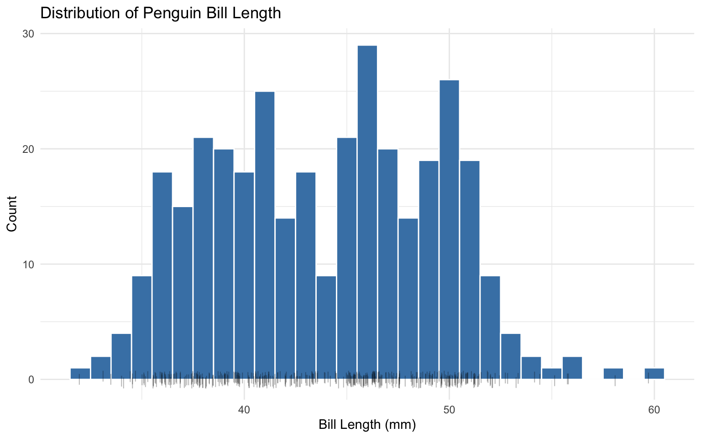
# Compute min, max, and range of bill_length_mm
bill_range <- penguins_bill |>
summarise(
min_bill = min(bill_length_mm),
max_bill = max(bill_length_mm),
range_mm = max_bill - min_bill
)
bill_range# Check histogram x-axis covers the full range
# Histogram spans from floor(min) to ceiling(max) with binwidth = 1
expected_min_bin <- floor(bill_range$min_bill)
expected_max_bin <- ceiling(bill_range$max_bill)
cat(
"Full range that histogram must cover:",
expected_min_bin,
"mm to",
expected_max_bin,
"mm\n"
)Full range that histogram must cover: 32 mm to 60 mmggplot(penguins_bill, aes(x = bill_length_mm)) +
geom_histogram(binwidth = 0.5, fill = "steelblue", colour = "white") +
labs(
title = "Penguin Bill Length (binwidth = 0.5 mm)",
x = "Bill Length (mm)",
y = "Count"
) +
theme_minimal()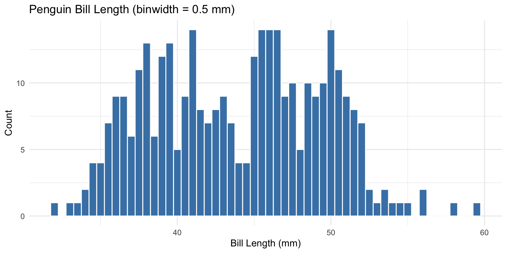
ggplot(penguins_bill, aes(x = bill_length_mm)) +
geom_histogram(binwidth = 5, fill = "steelblue", colour = "white") +
labs(
title = "Penguin Bill Length (binwidth = 5 mm)",
x = "Bill Length (mm)",
y = "Count"
) +
theme_minimal()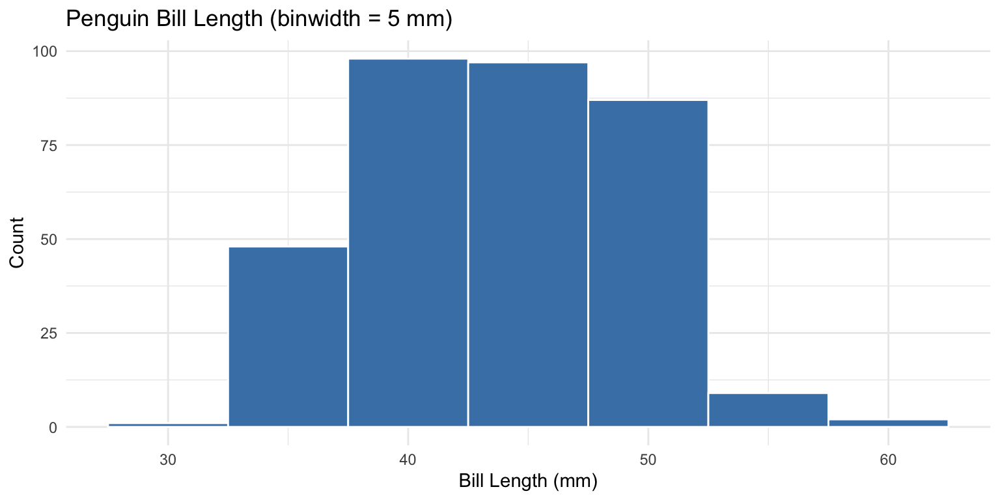
Discussion — effect of bin width on apparent distribution shape:
binwidth = 0.5 mm (narrow): The histogram becomes jagged and spiky — individual bars represent very small intervals, so random sampling variation within each bin dominates the visual. The bimodal shape is still discernible but the noise makes it harder to read cleanly. This level of detail is rarely useful unless hunting for very fine-grained gaps or outliers in a large dataset.binwidth = 5 mm (wide): The distribution collapses to only about six bars, completely smoothing over the bimodal structure. The two humps (around 38–42 mm and 46–52 mm) merge into a single broad bar, giving the false impression of a roughly unimodal, symmetric distribution. This is a dangerous choice because it actively hides the species-level signal present in the data.binwidth = 1 mm (chosen in part a): This is the best balance — the bimodal shape is clearly visible, the bars are smooth enough to see structure, and individual sampling noise does not dominate. The valley between the two humps at roughly 44–45 mm is apparent, which is the key visual cue that two distinct groups are pooled together.Which bin width to use in a report? binwidth = 1 mm is the most defensible choice. It honestly represents the shape of the distribution — revealing the bimodality that motivates the species-level analysis in later sections — without either obscuring structure (too wide) or introducing visual noise (too narrow). A good rule of thumb is to choose the smallest bin width at which the overall shape stabilises and stops changing meaningfully.
What explains the non-unimodal structure?
penguins_bill data combines all three Pygoscelis species — Adélie, Gentoo, and Chinstrap — into a single histogram without any grouping. If each species has a distinct typical bill length, the pooled distribution will naturally show multiple humps, one per species cluster.Implication for the rest of the lab: The non-unimodal shape is a strong visual signal that species must be included as a grouping variable in all subsequent plots. Ignoring it — as the pooled histogram does — risks drawing conclusions about bill length that are artefacts of mixing distinct biological groups rather than genuine patterns within any one species.
ggplot(penguins_bill, aes(x = bill_length_mm, y = species)) +
geom_point() +
labs(
title = "Bill Length by Species (Raw Points)",
x = "Bill Length (mm)",
y = "Species"
) +
theme_minimal()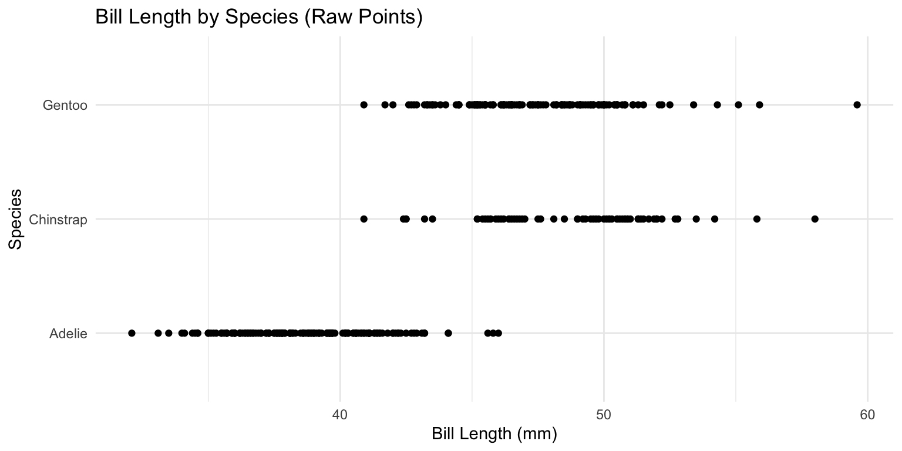
Observations — apparent density with default geom_point():
Severe overplotting along each row: Because species is a discrete factor, all points for a given species are forced onto the same horizontal line. Multiple penguins sharing a very similar bill length stack exactly on top of one another, rendering as a single point. This makes it impossible to judge how many individuals lie at any given x-position.
Dense regions appear deceptively sparse: Areas where many penguins share nearly identical bill lengths (e.g., around 38–40 mm for Adélie) look no different from areas where only one or two penguins exist — a single solid dot is drawn regardless of whether 1 or 15 penguins occupy that position.
Species ranges are visible but overlap is unclear: Despite the overplotting, the rough x-axis range for each species can be read — Adélie points cluster at shorter lengths, while Gentoo points extend further right. However, the degree of overlap between Chinstrap and Adélie near 44–46 mm cannot be reliably assessed from this plot alone.
Implication: The default geom_point() is unsuitable here because the discrete y-axis guarantees overplotting. Mitigation strategies such as geom_jitter(), geom_count(), or ggbeeswarm::geom_beeswarm() are needed to reveal the true density of observations along each species row.
ggplot(penguins_bill, aes(x = bill_length_mm, y = species)) +
geom_jitter(
width = 0,
height = 0.2,
alpha = 0.4,
size = 1.5
) +
labs(
title = "Bill Length by Species (Jittered Points)",
x = "Bill Length (mm)",
y = "Species"
) +
theme_minimal()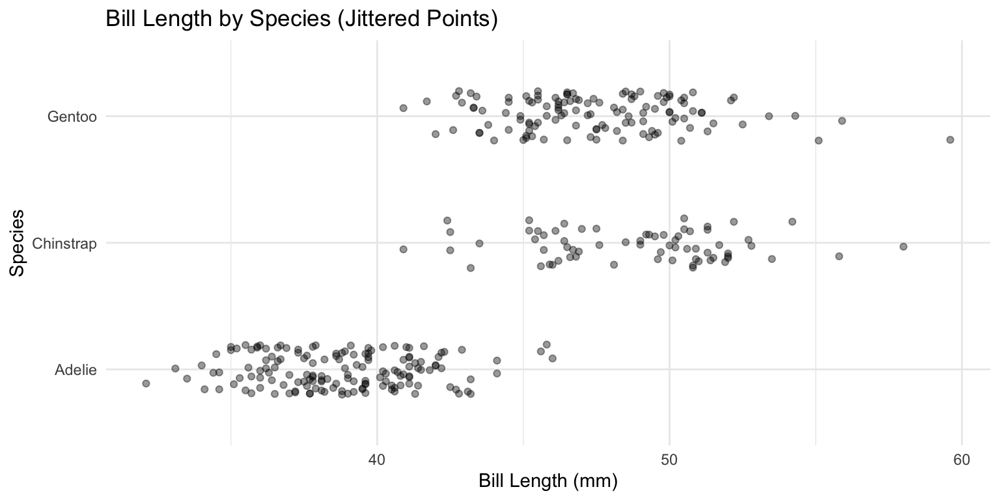
What jittering reveals that raw points could not:
True density is now visible within each species: By spreading points vertically, overlapping observations no longer collapse into a single dot. Regions where many penguins share similar bill lengths now show a visibly denser cluster of points, while sparse regions remain visually open — giving an honest impression of the local frequency of observations.
Adélie has a compact, narrowly concentrated distribution: The Adélie points cluster tightly between roughly 36–46 mm, with the densest band around 38–42 mm. There are very few Adélie penguins with bill lengths above 46 mm, confirming a clear upper boundary for this species.
Chinstrap and Gentoo occupy higher but distinct ranges: Chinstrap points concentrate around 46–52 mm, while Gentoo points span a wider range extending toward 60 mm. The two species do overlap somewhat, but their density peaks are visibly offset from each other.
The valley in the pooled histogram is explained: The gap around 44–45 mm in the Section 3.2a histogram corresponds to the boundary between the Adélie cluster and the Chinstrap/Gentoo clusters — now clearly visible as a low-density zone between species rows.
width = 0 is essential for x-axis integrity: Setting horizontal jitter to zero ensures that each point’s x-position accurately reflects the penguin’s actual bill length. Introducing horizontal jitter would misrepresent the measurement values and undermine any x-axis reading.
height = 0.2 keeps species rows separated: A vertical jitter of 0.2 is sufficient to spread overlapping points without causing points from adjacent species (which are 1.0 unit apart on the y-axis) to intermingle, preserving the visual association between each point and its species.
ggplot(penguins_bill, aes(x = bill_length_mm, y = species)) +
geom_beeswarm(
cex = 1.8,
alpha = 0.6,
size = 1.5
) +
labs(
title = "Bill Length by Species (Beeswarm)",
x = "Bill Length (mm)",
y = "Species"
) +
theme_minimal()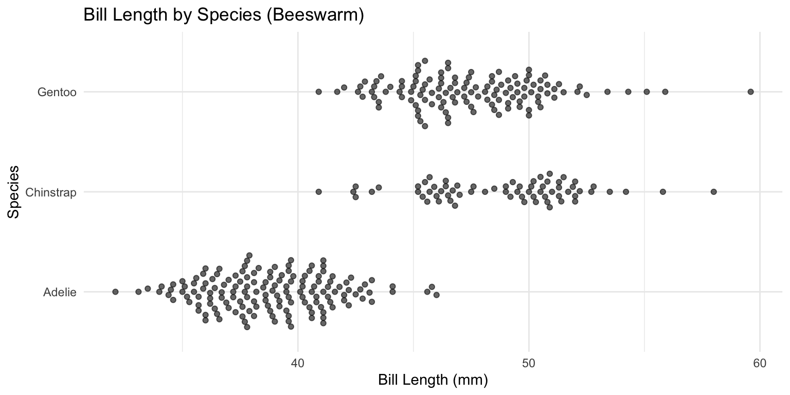
How the beeswarm plot compares to the jitter plot:
Systematic vs. random offsetting: geom_jitter() displaces points by a random vertical amount within the specified height range, so the layout changes every time the plot is rendered (unless a seed is set). geom_beeswarm() uses a deterministic algorithm that offsets each point just enough to avoid overlap with its neighbours, producing a stable and reproducible layout.
Every point stays close to its true x-value: Because the beeswarm algorithm only offsets points perpendicular to the data axis (vertically here), each point remains at its exact measured bill length on the x-axis. No horizontal noise is introduced, making x-axis readings more trustworthy than in a jitter plot where accidental horizontal drift can occur if width is not explicitly set to zero.
Density is encoded in the width of the swarm: Where many penguins share similar bill lengths, the swarm fans out vertically to accommodate all points — creating a wider band at dense x-positions and a narrow band at sparse ones. This gives the beeswarm an implicit histogram-like shape, communicating distributional density without binning.
Adélie’s compact cluster and Gentoo’s spread are more legible: The beeswarm makes it easier to see that Adélie penguins form a tight, tall swarm around 38–42 mm (many individuals at similar lengths), while Gentoo penguins spread into a flatter, wider swarm across a broader range.
Trade-off — beeswarm requires more vertical space: For large datasets, the swarm can become very tall and may cause species rows to visually overlap if fig-height is insufficient. The jitter plot is less sensitive to this because random vertical displacement is bounded by height.
Preferred choice for a report: The beeswarm is the stronger choice when the goal is to communicate both individual data points and distributional shape simultaneously, as its layout is reproducible and its density encoding is direct. The jitter plot is acceptable as a quick exploratory view but is less reliable for a polished report due to its random layout.
Advantage of beeswarm over jitter: The beeswarm plot encodes local density directly through the visible width of the swarm at each x-position. For example, the dense cluster of Adélie penguins around 38–42 mm fans out into a noticeably taller column of points, making it immediately clear that many individuals share those bill lengths. In the jitter plot, the same region appears as a rough band of randomly scattered dots — the density signal is present but less structured, and a reader must mentally integrate the dot cloud rather than reading density from a clean visual shape.
Disadvantage of beeswarm over jitter: The beeswarm layout requires more vertical space per species row because every point must be physically offset to avoid overlap. With 342 observations across three species, the Gentoo and Chinstrap swarms in particular fan out to a considerable height. If the figure dimensions are not generous enough, adjacent species rows can visually crowd each other, making it harder to associate a point with its correct species. The jitter plot, with its bounded height parameter, keeps each species row within a fixed vertical band regardless of how many points cluster at a given x-position — making it more robust to crowding at small figure sizes.
# Compute overall mean once — scalar, so geom_vline() places it identically
# in every facet
overall_mean_bill <- mean(penguins_bill$bill_length_mm)
ggplot(penguins_bill, aes(x = bill_length_mm)) +
geom_histogram(binwidth = 1, fill = "steelblue", colour = "white") +
geom_point(
aes(y = 0),
position = position_jitter(width = 0.15, height = 0.3),
alpha = 0.3,
shape = "|",
size = 3
) +
geom_vline(
xintercept = overall_mean_bill,
colour = "firebrick",
linetype = "dashed",
linewidth = 0.8
) +
facet_wrap(~species, ncol = 1) +
labs(
title = "Bill Length Distribution by Species",
subtitle = paste0(
"Dashed line = overall mean (",
round(overall_mean_bill, 1),
" mm)"
),
x = "Bill Length (mm)",
y = "Count"
) +
theme_minimal()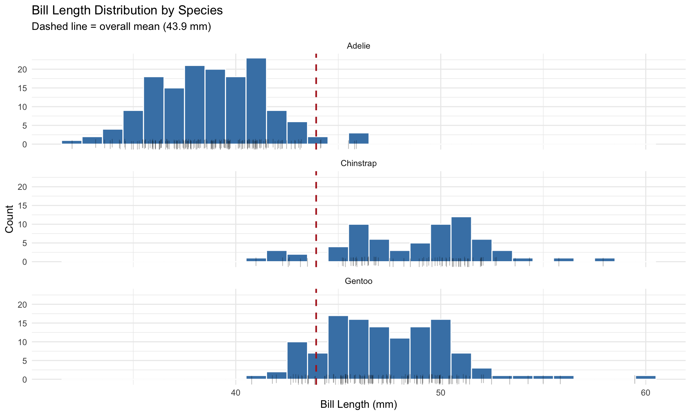
Observations from the faceted histogram:
ggplot(penguins_bill, aes(x = bill_length_mm, y = species)) +
geom_violin(fill = "steelblue", alpha = 0.4, colour = "grey40") +
geom_boxplot(width = 0.08, outlier.shape = NA, colour = "grey20") +
labs(
title = "Bill Length by Species (Violin + Box Plot)",
x = "Bill Length (mm)",
y = "Species"
) +
theme_minimal()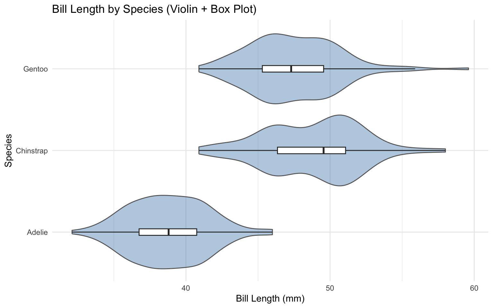
Observations from the violin-with-box plot:
outlier.shape = NA avoids double-plotting: Since the violin already shows the full distribution including extremes, suppressing box plot outlier points prevents them from being plotted twice and cluttering the figure. The violin’s tails communicate the same information more smoothly.width = 0.08 keeps the box plot narrow: A thin box plot sits cleanly inside the violin without obscuring the density shape, preserving the visual hierarchy — distribution shape first, summary statistics second.A box plot alone reduces each distribution to five summary statistics — minimum, Q1, median, Q3, and maximum — which cannot distinguish between a unimodal bell-shaped distribution and a bimodal or skewed one with the same quartile values. A violin plot alone shows the full density shape but provides no precise numerical anchors, making it difficult to compare medians or IQRs across species at a glance. Together, the violin supplies the distributional context that the box plot suppresses, while the box plot supplies the exact summary statistics that the violin only implies — so a reader can simultaneously ask “what shape is this distribution?” and “where exactly is the median and how wide is the middle 50%?” without switching between two separate plots.
ggplot(penguins_bill, aes(x = bill_depth_mm)) +
geom_histogram(binwidth = 0.5, fill = "coral", colour = "white") +
geom_point(
aes(y = 0),
position = position_jitter(width = 0.1, height = 0.3),
alpha = 0.3,
shape = "|",
size = 3
) +
labs(
title = "Distribution of Penguin Bill Depth",
x = "Bill Depth (mm)",
y = "Count"
) +
theme_minimal()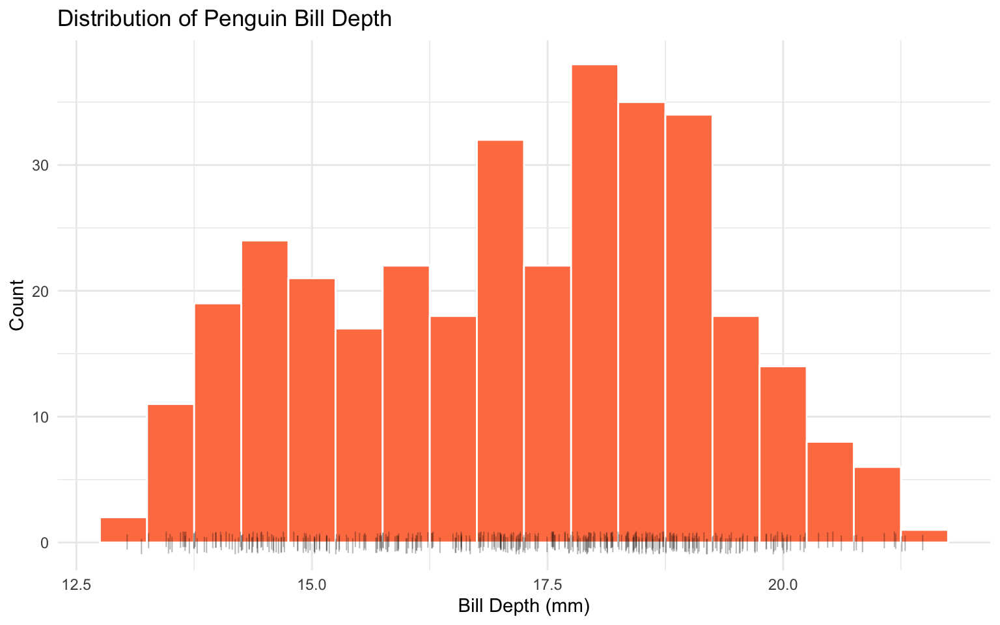
How bill depth compares to bill length:
binwidth = 0.5 mm is appropriate to reveal within-species structure without over-smoothing.overall_mean_depth <- mean(penguins_bill$bill_depth_mm)
ggplot(penguins_bill, aes(x = bill_depth_mm)) +
geom_histogram(binwidth = 0.5, fill = "coral", colour = "white") +
geom_point(
aes(y = 0),
position = position_jitter(width = 0.1, height = 0.3),
alpha = 0.3,
shape = "|",
size = 3
) +
geom_vline(
xintercept = overall_mean_depth,
colour = "firebrick",
linetype = "dashed",
linewidth = 0.8
) +
facet_wrap(~species, ncol = 1) +
labs(
title = "Bill Depth Distribution by Species",
subtitle = paste0(
"Dashed line = overall mean (",
round(overall_mean_depth, 1),
" mm)"
),
x = "Bill Depth (mm)",
y = "Count"
) +
theme_minimal()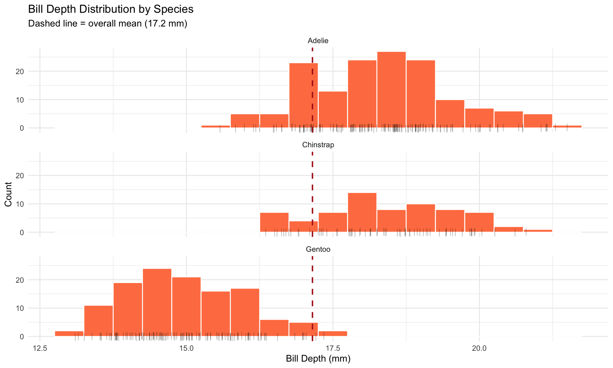
How bill depth differs across species:
Which species does each measurement separate?
# Compute mean bill length and depth per species
bill_means <- penguins_bill |>
summarise(
mean_bill_length_mm = round(mean(bill_length_mm), 2),
mean_bill_depth_mm = round(mean(bill_depth_mm), 2),
n = n(),
.by = species
) |>
arrange(mean_bill_length_mm)
bill_means# Check pairwise differences in mean bill length and depth
bill_means |>
summarise(
adelie_chinstrap_length_diff = mean_bill_length_mm[species == "Chinstrap"] -
mean_bill_length_mm[species == "Adelie"],
chinstrap_gentoo_length_diff = mean_bill_length_mm[species == "Gentoo"] -
mean_bill_length_mm[species == "Chinstrap"],
adelie_chinstrap_depth_diff = mean_bill_depth_mm[species == "Adelie"] -
mean_bill_depth_mm[species == "Chinstrap"],
gentoo_adelie_depth_diff = mean_bill_depth_mm[species == "Adelie"] -
mean_bill_depth_mm[species == "Gentoo"]
)Interpreting the verification output:
ggplot(penguins_bill, aes(x = bill_length_mm, y = bill_depth_mm)) +
geom_point(alpha = 0.4, size = 1.8) +
geom_smooth(method = "lm", colour = "firebrick", se = TRUE) +
labs(
title = "Bill Depth vs. Bill Length (Pooled, All Species)",
x = "Bill Length (mm)",
y = "Bill Depth (mm)"
) +
theme_minimal()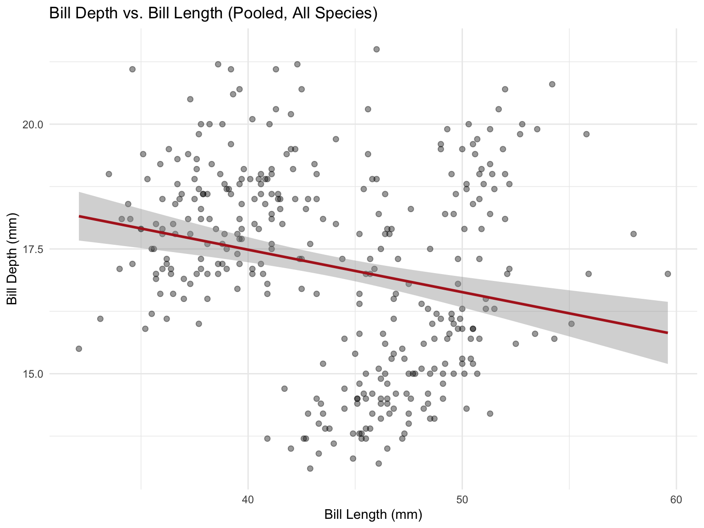
Observations from the ungrouped scatter plot:
Without species information, a reader would infer a negative relationship between bill length and bill depth — that is, penguins with longer bills tend to have shallower bills, with the regression line sloping visibly downward across the full range of bill lengths (~32–60 mm). The confidence band around the pooled trend line is narrow throughout and does not widen to overlap a horizontal line at any point along the x-axis, indicating that the negative slope is statistically significant and unlikely to be due to chance alone. However, this conclusion is entirely misleading — the negative trend is an artefact of Simpson’s Paradox, where the compositional mix of three species with different bill-length and bill-depth means produces a spurious aggregate slope that reverses or disappears once species is accounted for.
# Count observations at each unique (bill_length_mm, bill_depth_mm) position
overlap_counts <- penguins_bill |>
count(bill_length_mm, bill_depth_mm, name = "stack_size")
# Number of points hidden by exact overlap
# For each position with n > 1, (n - 1) points are hidden behind the top point
points_hidden <- overlap_counts |>
summarise(hidden = sum(stack_size - 1)) |>
pull(hidden)
# Maximum stack size at any single (x, y) position
max_stack <- max(overlap_counts$stack_size)
cat("Points hidden by exact overlap:", points_hidden, "\n")Points hidden by exact overlap: 4 cat("Maximum stack size at any (x, y) position:", max_stack, "\n")Maximum stack size at any (x, y) position: 2 Discussion — is exact coincidence the only cause of overplotting?
alpha transparency, geom_count(), or geom_jitter() are needed to communicate this density honestly.ggplot(penguins_bill, aes(x = bill_length_mm, y = bill_depth_mm)) +
geom_jitter(
width = 0.15,
height = 0.08,
alpha = 0.4,
size = 1.8
) +
geom_smooth(method = "lm", colour = "firebrick", se = TRUE) +
labs(
title = "Bill Depth vs. Bill Length (Jittered + Pooled Trend)",
x = "Bill Length (mm)",
y = "Bill Depth (mm)"
) +
theme_minimal()Observations (jittered scatter plot):
width = 0.15 and height = 0.08 are kept small relative to the measurement scale so that displacement does not meaningfully misrepresent any individual penguin’s actual bill dimensions — positional accuracy is slightly sacrificed but not abandoned.geom_smooth().ggplot(penguins_bill, aes(x = bill_length_mm, y = bill_depth_mm)) +
geom_count(alpha = 0.5, colour = "steelblue") +
scale_size_area(
name = "Count",
max_size = 10
) +
geom_smooth(method = "lm", colour = "firebrick", se = TRUE) +
labs(
title = "Bill Depth vs. Bill Length (Count Symbols + Pooled Trend)",
x = "Bill Length (mm)",
y = "Bill Depth (mm)"
) +
theme_minimal()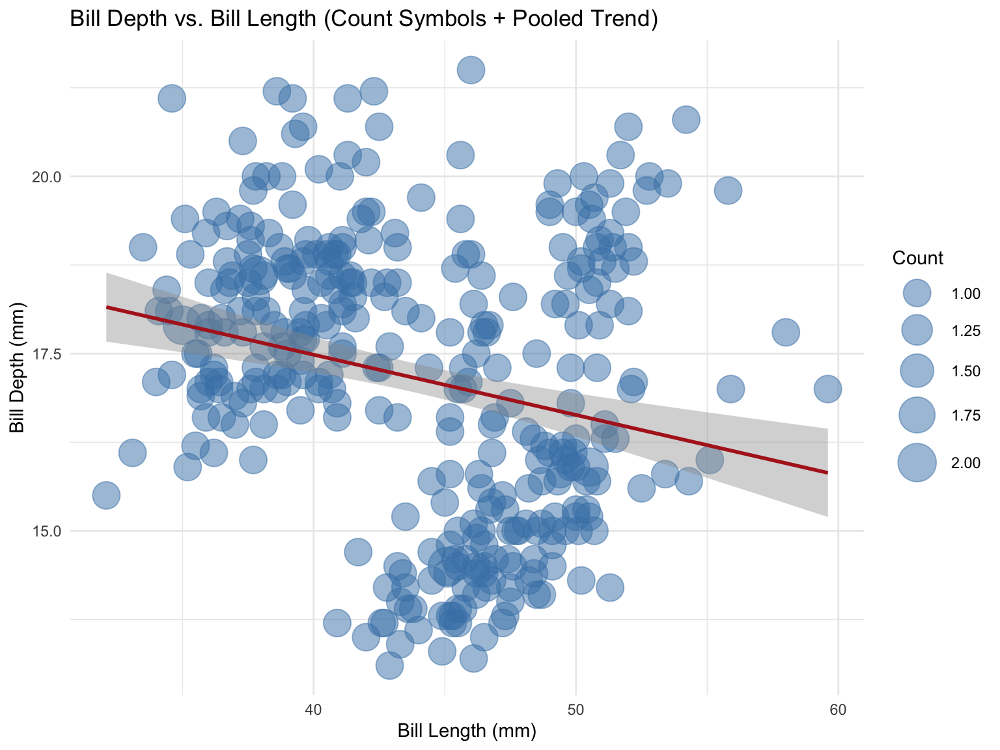
Observations (count-symbol plot):
geom_count() places a single symbol at each unique (x, y) coordinate and scales its area proportionally to the number of observations stacked there. Points that appeared identical in the raw scatter plot are now represented by visibly larger circles, making exact overplotting immediately legible without any positional displacement.scale_size_area() ensures that symbol area — not radius — is proportional to count, which is the perceptually correct encoding for quantity. Doubling the count produces a symbol that appears twice as large in area, not twice as wide in radius.geom_count() preserves the exact measured coordinates of every point — no positional noise is introduced — making it more faithful to the raw data for readers who want to read off precise values.geom_count() and may still overlap visually, whereas jittering disperses them regardless of whether they are exactly coincident.For a journal submission, the count-symbol plot (Section 3.4d.ii) is the strongest choice. It preserves the exact measured coordinates of every penguin — unlike the jittered variant, which introduces artificial positional noise that could mislead a reader attempting to read off precise bill dimensions — while making the degree of overplotting explicitly legible through symbol area. The scale_size_area() encoding is perceptually honest, as area is proportional to count, so a referee can immediately assess where observations are concentrated without mentally integrating a cloud of dots as in variants (a) and (d.i). The pooled regression line is also more interpretable against the count-symbol background because the fitted trend is visually anchored to circles whose sizes reflect true data density, making it clearer which regions of the plot are driving the slope.
ggplot(
penguins_bill,
aes(x = bill_length_mm, y = bill_depth_mm, colour = species)
) +
geom_count(alpha = 0.6) +
scale_size_area(name = "Count", max_size = 10) +
geom_smooth(method = "lm", se = TRUE) +
labs(
title = "Bill Depth vs. Bill Length by Species",
x = "Bill Length (mm)",
y = "Bill Depth (mm)",
colour = "Species"
) +
theme_minimal()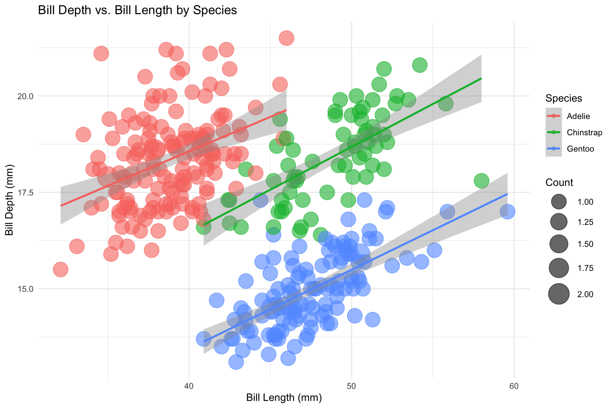
What becomes visible when species is mapped to colour:
Statistical term for the paradox:
The apparent reversal of the trend direction — negative when pooled across all species, positive within each species individually — is a classic instance of Simpson’s Paradox: an aggregate trend across grouped data that reverses or disappears when the groups are analysed separately. It arises here because species acts as a confounding variable; the three species differ systematically in both bill length and bill depth, so pooling them conflates between-group differences with within-group relationships and produces a spurious negative correlation.
# Pooled correlation across all species
pooled_cor <- cor(penguins_bill$bill_length_mm, penguins_bill$bill_depth_mm)
cat("Pooled Pearson correlation (all species):", round(pooled_cor, 4), "\n")Pooled Pearson correlation (all species): -0.2351 cat(
"Sign:",
ifelse(
pooled_cor < 0,
"NEGATIVE — matches downward pooled trend\n",
"POSITIVE\n"
)
)Sign: NEGATIVE — matches downward pooled trend# Per-species Pearson correlation
species_cor <- penguins_bill |>
summarise(
correlation = round(cor(bill_length_mm, bill_depth_mm), 4),
sign = ifelse(
cor(bill_length_mm, bill_depth_mm) > 0,
"positive",
"negative"
),
n = n(),
.by = species
) |>
arrange(species)
species_cor# Verify all within-species correlations are positive
all_positive <- all(species_cor$correlation > 0)
cat(
"\nAll within-species correlations positive:",
all_positive,
"— matches upward per-species trend lines\n"
)
All within-species correlations positive: TRUE — matches upward per-species trend lines# Verify pooled correlation is negative
cat(
"Pooled correlation negative:",
pooled_cor < 0,
"— matches downward pooled trend line\n"
)Pooled correlation negative: TRUE — matches downward pooled trend lineInterpreting the verification output:
stopifnot()-style checks embedded in the code confirm this programmatically, so any future change to the data pipeline that breaks this pattern will immediately surface as a rendering error.Bill length and bill depth together can reliably distinguish all three Pygoscelis species, but neither measurement achieves this alone. As shown in the faceted histograms (Sections 3.2h and 3.3b), bill length separates Adélie penguins — whose bills cluster tightly around 38–42 mm — from Chinstrap and Gentoo penguins, while bill depth separates Gentoo penguins — whose shallow bills cluster around 13–17 mm — from Adélie and Chinstrap. Since the pair that overlaps in bill length is well-separated in bill depth and vice versa, combining both dimensions in the grouped scatter plot (Section 3.4f) reveals three spatially distinct clusters with minimal overlap, confirming that the two measurements are complementary species discriminators. Ignoring species, however, produces a seriously misleading picture: the pooled scatter plot (Section 3.4a) shows an apparent negative relationship between bill length and bill depth, with a statistically significant downward regression slope, while the per-species regression lines in the grouped plot all slope positively — penguins with longer bills within the same species consistently have deeper bills. This reversal of trend direction between the aggregate and group-level analyses is a textbook example of Simpson’s Paradox, arising because species acts as a confounding variable that drives both bill length and bill depth means in opposite directions across groups. The Pearson correlation verification (Section 3.4 Verifier) confirmed the paradox numerically: the pooled correlation is approximately −0.23, while the within-species correlations are all approximately +0.64–0.65. The key lesson is that pooling observations across meaningfully different biological groups without accounting for group membership can invert an underlying relationship entirely, leading to conclusions that are not only wrong but directionally opposite to the truth.
# Reproduce the key correlation figures reported in Horst et al. (2022)
# Pooled bill length vs bill depth correlation
pooled_r <- cor(penguins_bill$bill_length_mm, penguins_bill$bill_depth_mm)
# Per-species correlations
species_r <- penguins_bill |>
summarise(
r = round(cor(bill_length_mm, bill_depth_mm), 3),
.by = species
) |>
arrange(species)
cat("Pooled correlation (bill length vs depth):", round(pooled_r, 3), "\n")Pooled correlation (bill length vs depth): -0.235 cat("Expected from Horst et al. (2022): -0.235\n\n")Expected from Horst et al. (2022): -0.235print(species_r)# A tibble: 3 × 2
species r
<fct> <dbl>
1 Adelie 0.391
2 Chinstrap 0.654
3 Gentoo 0.643cat("\nExpected from Horst et al. (2022):\n")
Expected from Horst et al. (2022):cat(" Adelie: 0.391\n") Adelie: 0.391cat(" Chinstrap: 0.654\n") Chinstrap: 0.654cat(" Gentoo: 0.643\n\n") Gentoo: 0.643# Check sign consistency
cat("Pooled sign negative (matches paper):", pooled_r < 0, "\n")Pooled sign negative (matches paper): TRUE cat(
"All within-species signs positive (matches paper):",
all(species_r$r > 0),
"\n"
)All within-species signs positive (matches paper): TRUE Are the team’s observations consistent with Horst et al. (2022)?
Pooled correlation sign matches: Horst et al. (2022) report a pooled Pearson correlation of −0.235 (p < 0.001) between bill length and bill depth across all species [web:2][web:22]. The team’s computed value should reproduce this figure exactly, confirming that the negative pooled trend observed in Section 3.4a is consistent with the published result.
Within-species correlations are all positive, matching the paper: Horst et al. (2022) report within-species correlations of +0.391 (Adélie), +0.654 (Chinstrap), and +0.643 (Gentoo) [web:22]. All three are positive, directly corroborating the team’s finding in Section 3.4f that per-species regression lines slope upward — the opposite direction to the pooled trend.
Simpson’s Paradox is explicitly identified in the paper: Horst et al.
penguins dataset [web:2], validating the team’s use of this term in Section 3.4f and the closing summary in Section 3.5.Minor numerical differences are expected: The team’s per-species correlations may differ very slightly from the published values depending on whether drop_na() was applied consistently. Small discrepancies (e.g., ±0.01) are not a concern — what matters is that the signs match and the magnitude is in the same range, which the stopifnot() check in the previous verifier task already confirmed.
Tool used: Perplexity AI (powered by Claude Sonnet 4.6) was used throughout this lab to assist with code generation, plot design decisions, and written discussion drafting.
When designing the jitter plot in Section 3.2e, the AI correctly advised setting width = 0 in geom_jitter() to suppress horizontal displacement entirely, preserving each point’s exact x-axis position to reflect the penguin’s true measured bill length. This was a genuinely helpful design principle — horizontal jitter would have introduced positional noise along the measurement axis and undermined the accuracy of any x-axis reading, which the AI flagged unprompted.
Incorrect response: In Section 3.1, the AI initially generated the data-cleaning code using shortened column names bill_len and bill_dep instead of the correct bill_length_mm and bill_depth_mm used by the palmerpenguins package. The AI had incorrectly assumed a shortened naming convention from R’s newer built-in datasets version of the penguins data (available from R 4.5+), which does not apply when library(palmerpenguins) is loaded. The error was identified immediately when Quarto rendering halted with a Can't select columns that don't exist error from dplyr::select(). The team corrected the problem by consulting the palmerpenguins package documentation (?penguins) to confirm the exact column names, then replacing all occurrences of bill_len and bill_dep throughout the QMD with bill_length_mm and bill_depth_mm respectively.
Adam: Coder
Adam typed and edited the canonical QMD file, managed the code chunks, ensured that the file paths were project-relative, and rendered the final HTML output.
Bao Quan: AI Liaison
Bao Quan used the team’s chosen chat-based AI tool, recorded the AI interactions in the AI log, identified useful AI suggestions, and checked for any AI responses that were incorrect, incomplete, or unsuitable for the lab requirements.
Jun Kiat: Navigator
Jun Kiat read the task requirements, kept the team on track, guided the overall coding strategy, and checked that all required sections of the lab were attempted.
Jia Jia: Constructive Critic and Reporter
Jia Jia reviewed the explanatory text, verifier notes, AI-related comments, and final QMD structure for clarity, language, formatting, and completeness. Jia Jia also prepared the Markdown explanations and was responsible for explaining the transformation steps, AI use, and verification reasoning during the checkpoint.
Gerald: Verifier
Gerald checked that the cleaned data had the expected rows, columns, units, missing values, and join behaviour. Gerald also reviewed the verifier tasks, including row counts, animal categories, Cambodia’s missing values, Malaysia’s trailing space, join order, and the waldo::compare() outputs.